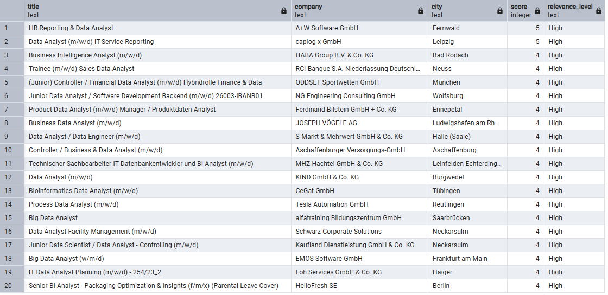
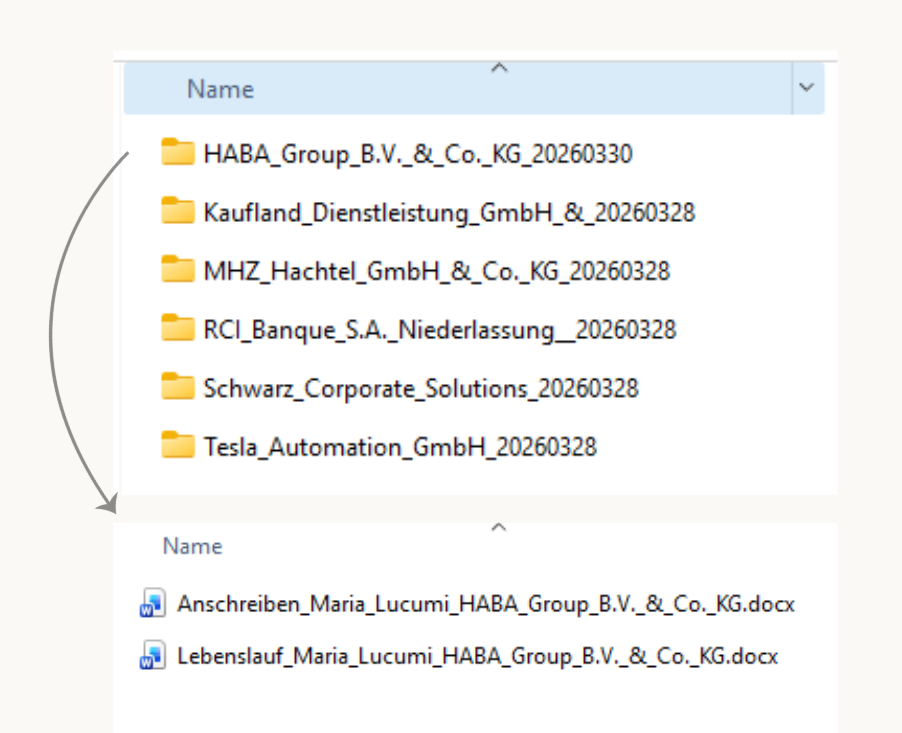

Zielsetzung
JobRadar Deutschland ist ein eigenständig entwickeltes End-to-End-Datenprojekt zur Automatisierung der Jobsuche im deutschen Arbeitsmarkt. Das System kombiniert Datenextraktion über eine offizielle REST API, NLP-basiertes Relevanz-Scoring und KI-gestützte Dokumentengenerierung zu einer vollständigen Pipeline.
Die zentrale Fragestellung: Wie lässt sich der Aufwand einer strukturierten Jobsuche durch Datenpipelines und KI von mehreren Stunden auf wenige Minuten reduzieren — ohne dabei Qualität und Ehrlichkeit der Bewerbungsunterlagen zu opfern?
Architektur & Methodik
Das System besteht aus drei aufeinander aufbauenden Modulen, die sequenziell ausgeführt werden:
Datenextraktion — Bundesagentur für Arbeit API
Verbindung zur offiziellen REST API über OAuth2-Authentifizierung. Suche nach 10 relevanten Suchbegriffen × 6 Städte in der Stuttgart-Region plus Remote-Stellen. Automatische Deduplizierung über die Referenznummer und Speicherung in PostgreSQL.
NLP-Relevanz-Scoring
Gewichtetes Keyword-Matching gegen 30+ relevante Skills mit individuellen Punktgewichten. Klassifizierung jeder Stelle in High / Medium / Low / Not relevant. Bonus-Punkte für direkte Jobtitel-Keywords im Stellentitel.
KI-gestützte Dokumentengenerierung — Claude API
Liest Top-Stellenangebote aus der Datenbank und sendet Stellenbeschreibung plus Lebenslauf-Basis an die Claude API. Generiert ein angepasstes Profil und ein individuelles Anschreiben — mit strikten Regeln gegen Übertreibung und KI-Stil. Zwei Checkpoint-Stufen ermöglichen manuelle Kontrolle vor der Word-Erstellung.
Bewerbungs-Tracking — Excel
Manuelles Tracking aller gesendeten Bewerbungen mit Dropdown-Feldern für Status und Portal. Automatische KPIs für Antwortquote, Tage ohne Antwort und Verteilung nach Unternehmen — alles in einem integrierten Excel-Dashboard.
Output & Ergebnisse
Bewerbungs-Tracker Dashboard

Der Bewerbungs-Tracker zeigt auf einen Blick den Status aller laufenden Bewerbungen — mit KPIs für Antwortquote, Tage ohne Reaktion und Verteilung nach Portal und Status. Die Tabelle enthält alle relevanten Informationen: Unternehmen, Stelle, Arbeitsmodell, Skills und Kontaktperson.
Generierte Bewerbungsunterlagen

Pro Stelle generiert das System zwei Word-Dokumente: einen Lebenslauf mit angepasstem Profil für die konkrete Stelle sowie ein Anschreiben im menschlichen Stil — ohne KI-Floskeln, mit ehrlicher Darstellung der tatsächlichen Erfahrung.
Zentrale Erkenntnisse
API-Daten allein reichen nicht — NLP macht den Unterschied
Von 1.118 extrahierten Stellenangeboten sind nur 54 (4,8%) wirklich relevant für das Zielprofil. Ohne NLP-Scoring müssten alle manuell gesichtet werden. Das Scoring reduziert den Prüfaufwand um über 95%.
KI-Generierung braucht strikte Grenzen
Ohne klare Regeln im Prompt tendieren KI-Modelle dazu, Erfahrungen zu übertreiben und generische Formulierungen zu verwenden. Die Lösung: explizite Verbotslisten, Checkpoint-Reviews und ein CV-Basis-Dokument das als einzige Wahrheitsquelle dient.
Automatisierung ersetzt nicht das Urteilsvermögen
Das System entscheidet nicht — es bereitet vor. Jede Bewerbung wird manuell freigegeben, jedes Dokument vor dem Versand geprüft. Die Automatisierung spart Zeit bei repetitiven Aufgaben und schafft Raum für die wichtigen Entscheidungen.